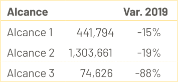

Capítulo
Sostenibles en el tiempo
En nuestra Compañía, entendemos la sostenibilidad como la construcción permanente de confianza con todos nuestros grupos de interés, logrando relaciones de largo plazo para evolucionar juntos.
Capítulo
En nuestra Compañía, entendemos la sostenibilidad como la construcción permanente de confianza con todos nuestros grupos de interés, logrando relaciones de largo plazo para evolucionar juntos.

Ruta de la Pensión.
Entró en operación esta iniciativa dirigida a las personas afiliados al IMSS y que empezaron a cotizar antes de 1997. Es una guía de pasos a seguir para que los trabajadores se preparen y tramiten su pensión sin contratiempos.
Plataformas digitales Afore.
Atención y servicios a través de nuestras plataformas digitales en web y dispositivos móviles para realizar diversos trámites sin necesidad de acudir personalmente a módulos de atención.
App Afore SURA.
Se realizaron mejoras importantes a nuestra aplicación para ampliar la oferta de valor a fin de que los clientes puedan autogestionar varios trámites como autoregistrarse y domiciliar su ahorro voluntario.
Nueva oferta valor para segmento afluente.
Inversiones SURA lanzó una oferta integral de servicios y productos relacionados a la gestión del patrimonio, educación y retiro. Se puso especial énfasis en la asesoría y experiencia digital.
Encuesta NPS Adquisiciones:
69%
niños y niñas beneficiados
79%
Adquisición Aportaciones Voluntarias
65%
Adquisición Fondos
Reforma de pensiones.
Gracias a la colaboración de los diferentes actores de la sociedad: Gobierno, empresarios, sindicatos y el gremio de las Afores, se aprobó la reforma más importante al sistema de pensiones, desde su creación en 1997. El objetivo primordial de esta reforma es mejorar las pensiones de los afiliados de manera significativa.
Futuro a voces.
Destacados personajes de la cultura, la ciencia, el arte y la tecnología de Latinoamérica impartieron charlas donde reflexionaron sobre cómo enfrentar los desafíos actuales en un entorno de pandemia. Esta iniciativa se enmarcó dentro de la iniciativa Futuros Posibles de SURA AM. Las charlas se transmitieron en formatos de video y podcast.
Hay Festival Querétaro. Imaginemos el mundo juntos.
SURA es el principal aliado en Latinoamérica de esta iniciativa, cuyo propósito es promover diversas expresiones del arte, la cultura y la educación. En 2020 el programa fue totalmente digital y gratuito para los espectadores mexicanos y de otras partes del mundo.
Conversatorio Fundación Gabo.
SURA es aliado de la Fundación Gabo porque cree en el periodismo ético, responsable e independiente que contribuye a construir una sociedad mejor informada. En el marco de esta alianza, el reconocido periodista Jean-Francois Fogel impartió una charla a editores y periodistas mexicanos titulada “¿Puede el periodismo combatir la desinformación?”.
Encuesta NPS Adquisiciones:
+19millones
de pesos en aportaciones gremiales
Solicitud a emisoras para divulgar información ASG.
Afore SURA lideró esta iniciativa a través de la cual 80 inversionistas institucionales y entidades que operan en el mercado financiero mexicano, firmaron una declaración pública solicitando a emisoras listadas en las Bolsas de Valores divulgar información ambiental, social y de gobierno corporativo (ASG).
Adhesión al PRI.
Afore SURA formalizó su adhesión a los Principios de Inversión Responsable (PRI). Esta organización trabaja a favor de un sistema financiero global económicamente eficiente y sostenible que impulse la creación de valor a largo plazo.
Consejo Consultivo de Finanzas Verdes (CCFV).
En 2020 y por quinto año consecutivo, Afore SURA mantuvo la presidencia colegiada del Consejo Consultivo de Finanzas Verdes. El CCFV es un organismo representativo del sector financiero mexicano que promueve el desarrollo de las finanzas sostenibles.
Avanzamos en nuestro objetivo de medir las emisiones directas de gases de efecto invernadero derivadas de nuestra operación, alcanzando una reducción total de 34% vs 2019.
2020 Emisiones en CO2e

Cuentas asignadas.
A través de la App Afore SURA, un total de 20,426 cuentas asignadas se registraron formalmente como clientes de Afore SURA (tres veces más vs 2019). Este registro representa una gran oportunidad para brindarles acceso a los servicios de la Afore para mejorar su ahorro para el retiro.
Educación Previsional Afore SURA.

SNEF: 2,971 beneficiados
Charla Ruta de la Pensión en universidad: 1,299 beneficiados
Sitio web Ruta de la Pensión: 174,000 visitas
Hablemos de Pensiones para Universitarios: 2,538 beneficiados
Webinars Afore: 4,813 beneficiados
Facebook Live Afore: 533,088 beneficiados
Blog Afore SURA: 2,801 visitas
App FINDO: Usuarios registrados: 6,663 papás, 1,705 hijos
Educación Financiera Inversiones SURA.
Webinars Inversiones: 11,696 beneficiados
Blog Inversiones: 12,073 visitas
Podcast Inversiones: 1,514 beneficiados
Facebook Live Inversiones: 12,635 visitas
729,878
personas beneficiadas con las iniciativas de educación previsional de Afore SURA
37,918
personas beneficiadas con las iniciativas de Inversiones SURA